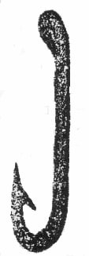

បុរេប្រវត្តិខ្មែរ គឺជាសម័យកាលដ៏យូរលង់ណាស់មកហើយ ដែលពេលនោះ មនុស្សពុំទាន់ចេះបង្កើតតួអក្សរសម្រាប់កត់ត្រាហេតុការណ៍អ្វីឡើយ។ ដើម្បីសិក្សាអំពីបុរេប្រវត្តិខ្មែរ យើងក៏ត្រូវសិក្សាអំពីទឹកដីខ្មែរដែរ។ នៅភូមិភាគអាស៊ីអាគ្នេយ៍កាលពីមុនធ្លាប់មានពំនើងផ្នត់កាឡេដូយាង រឺ កាឡេដុង (Plissement calédonien) និង ពំនើងផ្នត់អែរស៊ីនញាង (Plissement hercynienne) ដែលធ្វើឲ្យផុសឡើងនៅខ្ពង់រាប និង ជួរភ្នំនានាពាសពេញប្រទេសខ្មែរសព្វថ្ងៃនេះ។ បន្ទាប់មកក៏បានលិចទៅវិញដោយទឹកសមុទ្រនៅស័កទី៣។ នៅស័កទី៤ដីក៏ផុសចាប់ពីភូមិភាគហេមពាន្តរហូតដល់អាស៊ីអាគ្នេយ៍ទាំងមូល។ ដីខ្មែរក៏ដុះឡើងពី ៧០០ ទៅ ៨៨០ មាត្រ។ ក្នុងស័កទី៤ មានលំនាចនិងជំនោរទឹកសមុទ្រ ដែលជាមូលហេតុធ្វើឲ្យដីលិចហើយផុសឡើងវិញសាជាថ្មីម្ដងទៀត។ នៅចន្លោះពី ៦០០០០០ ដល់ ៥០០០ ឆ្នាំ មុ.គ. ទឹកសមុទ្របាននាចថយទៅពី ១៣០ ដល់ ១៨០ មាត្រ (បើប្រៀបទៅនឹងកំពស់ទឹកសមុទ្រសព្វថ្ងៃនេះ)។ អ្នកភូគព្ភវិទូខ្លះបានយល់ថា កាលណោះគ្មានសមុទ្រខណ្ឌភូមិភាគឥណ្ឌូចិន និង ប្រជុំកោះទ្វីបឥណ្ឌា (Insulinde) ស្ថិតនៅជាប់គ្នារហូតគ្មានសមុទ្រខណ្ឌដូចយើងសព្វថ្ងៃនេះទេ។ នៅប្រមាណ ១៥០០០ ឆ្នាំមុ.គ. ទឹកសមុទ្រជោរបានកំពស់ ១៥ មាត្រ ដែលបណ្ដាលឲ្យទឹកដីកម្ពុជាក្រោម និងវាលទំនាបប្រទេសខ្មែរបានលិចទៅក្នុងទឹកវិញ។ នៅសតវត្សទី៣ មុ.គ. ទឹកសមុទ្របាននាចទៅវិញបន្តិចៗម្ដង។ ឯពេលនោះ ទន្លេមេគង្គបាននាំដីល្បាប់មកចាក់បំពេញបន្តិចៗម្ដង ក្លាយជាដីសណ្ដបន្តដេញតាមទឹកសមុទ្រស្រក។[១] គេអាចដឹងព្រឹត្ដិការណ៍ផ្សេងៗក្នុងសម័យបុរេប្រវត្ដិតាមការសិក្សាលើគ្រោងឆ្អឹងមនុស្ស ប្រដាប់ប្រដា សំភារៈ កំទេចសំណល់គ្រប់បែបយ៉ាង ដែលមនុស្សជំនាន់មុនបានបន្សល់ទុក។ នៅប្រទេសកម្ពុជាយើង មានស្ថានីយ៍បុរេប្រវត្ដិសំខាន់ៗដូចជា៖ -ស្ថានីយ៍បុរេប្រវត្ដិសំរោងសែន និង អន្លង់ផ្តៅ (កំពង់ឆ្នាំង) -ស្ថានីយ៍បុរេប្រវត្ដិម្លូព្រៃ (ព្រះវិហារ) -ស្ថានីយ៍បុរេប្រវត្ដិល្អាងស្ពាន (បាត់ដំបង) នៅក្នុងស្ថានីយ៍បុរេប្រវត្ដិទាំងប៉ុន្មាននេះ គេបានជីកកាយដីរកឃើញប្រដាប់ប្រើប្រាស់របស់មនុស្សជំនាន់មុនដូចជា៖ ពូថៅ ញញួរ ពន្លាកធ្វើពីថ្ម ផ្លែព្រួញ ផ្លែសន្ទូច ច្បូក ផ្លែកណ្ដៀវ ធ្វើពីឆ្អឹងសត្វ ក្អម ឆ្នាំង ចាន ធ្វើពីដីដុត។ ក្រៅពីនេះ គេនៅឃើញមានត្រល់សម្រាប់ត្បាញសំពត់។ ឧបករណ៍ដែលធ្វើពីលង្ហិនពុំសូវសំបូរទេ។ ការរស់នៅរបស់មនុស្សនាសម័យបុរេប្រវត្ដិ ដោយសារឧបករណ៍ប្រើប្រាស់ ដែលបានរកឃើញនៅតាមស្ថានីយ៍បុរេប្រវត្ដិ គេអាចសន្និដ្ឋានថា នៅលើទឹកដីកម្ពុជាយើង មានមនុស្សរស់នៅជាយូរលង់ណាស់មកហើយ គឺតាំងពីសម័យយុគថ្មរំលីងម៉្លេះ ពោលគឺតាំងពីសម័យដែលមនុស្សពុំទាន់ស្គាល់លោហធាតុ ហើយយកថ្មមករំលីងធ្វើជាឧបករណ៍ប្រើប្រាស់ប្រចាំថ្ងៃ។ មនុស្សជំនាន់នោះរស់នៅជាក្រុមៗដើម្បីទប់ទល់នឹងសត្វសាហាវ ហើយគេចេះសង់លំនៅដ្ឋានជាខ្ទមខ្ពស់ផុតពីដី។ គេចេះត្បាញសំពត់បិទបាំងរាងកាយ។ គេចេះរកស៊ីដោយ បរបាញ់ និង នេសាទ។ តែការដាំដំណាំ និង ចិញ្ចឹមសត្វគឺតិចតួច ណាស់។ រីឯប្រពៃណី គេពុំមានសាសនា ឬ ជំនឿអាទិទេពណាមួយទេ។ គេជឿថា ខ្មោចលង ហើយជឿលើអ្នកតា។ កាលណាមានមនុស្សស្លាប់ គេយកសពនោះទៅកប់ដោយដាក់ជាមួយនូវប្រដាប់ប្រដាប្រើប្រាស់ និង គ្រឿងអលង្ការ។
សូមមើលផងដែរ: អរិយធម៌ទក្សិណាស៊ី តាមការសិក្សាបុរេប្រវត្តិខ្មែរគេអាចដឹងថាអរិយធម៌ខ្មែរជាប់ទាក់ទងនឹងអរិយធម៌ទក្សិណាស៊ី។ តើអ្វីទៅជាអរិយធម៌ទក្សិណាស៊ី? អរិយធម៌ពិសេសនេះមានតាំងពីចិននិងឥណ្ឌាមិនទាន់មកដល់ទៅទៀត អាស៊ីអាគ្នេយ៍បានស្គាល់អរិយធម៌នេះរួចទៅហើយ។ អរិយធម៌នេះបានលាតសន្ធឹងពីអាស៊ីខាងត្បូង ប្រទេស ឥណ្ឌា ហ្គីណេថ្មី និងចិនខាងត្បូង (ចាប់ពីទន្លេឆាងជាំងចុះក្រោម)។ ដោយសារតែអរិយធម៌ទាំងនេះមានលក្ខណៈដូចគ្នាគេក៏ឲ្យឈ្មោះថា អរិយធម៌ទក្សិណាស៊ី រឺ អាស៊ីខាងត្បូង រឺ អរិយធម៌ខ្យល់រដូវ។ ដោយលោកអេម.ហូកាត និងលោក P.Mus (ភីម៉ុស) ឃើញដូចគ្នានៃជំនឿនិងពិធីជាមូលដ្ឋានក្នុងភូមិភាគអាស៊ីខ្យល់រដូវនេះ។ ដោយគេមិនដឹងថាវាមកពីណាគេក៏បានឲ្យសម្មតិកម្មពីរ៖ អ្នកខ្លះយល់ថាមានអំបូរមនុស្សមួយ រឺ ច្រើនដែលនៅឥណ្ឌូចិន និងលើកោះបានហូរចូលប្រទេសឥណ្ឌាមុនពួកអារ្យមកដល់។ ខ្លះទៀតយល់ថាពួកទ្រវិឌ រឺ អារ្យបានរុញច្រាន ពួកអ្នកស្រុកដើមមកកាន់ទិសខាងត្បូង រឺ ខាងកើត ហើយបានធ្វើដំណើរទៅកាន់ឥណ្ឌូចិននិងប្រជុំកោះអាំងសូលីន (Insulinde)។ គោលសំខាន់នៃអរិយធម៌ទក្សិណាស៊ីគឺ៖ សំភារៈ ចេះធ្វើស្រែវស្សា ចេះវិធីបញ្ចូលទឹកក្នុងស្រែ ចេះប្រើគោក្របី និងធ្វើប្រដាប់សម្រាប់ធ្វើស្រែខ្លះ ចេះស្លលោហធាតុ ស្ទាត់ជំនាញខាងនាវាចរណ៍: អរិយធម៌នេះបានផ្សព្វផ្សាយរហូតដល់កោះម៉ាដាហ្កាស្កា ហើយខ្លះទៀតថារហូតដល់ប្រជុំកោះជប៉ុនទៀត ទំនាក់ទំនងសម្អាងលើប្រដាប់ប្រដាបុរេប្រវត្តិ ភាសា និង របាំប្រពៃណី។ មូលហេតុបានផ្សព្វផ្សាយដូច្នេះមកពីមានការយល់ដឹងអំពីភាពឆ្លាស់គ្នា នៃខ្យល់រដូវ។ ជំនឿ ជនជាតិខ្មែរនៅសម័យបុរេប្រវត្តិ អនុវត្តជំនឿគោរពបុព្វបុរសដូនតា ហើយធ្វើសក្ការៈបូជាអ្នកតាម្ចាស់ទឹកម្ចាស់ដី ជាទង្វើដែលអាចអោយយល់បានថា នៅក្នុងប្រទេសមួយដែលទឹក និងដី មិនអាចកាត់ផ្តាច់ពីគ្នាបាន ហើយហាក់ដូចជាច្រឡូកលាយឡំភ្ជាប់គ្នាទៅនឹងមេឃ ក្នុងគំនិតចក្រវាឡដ៏អស្ចារ្យមួយ។ មនុស្សជាន់ដើមយល់ថាមនុស្សស្លាប់ទៅមិនសូន្យទេ គឺនឹងទៅចាប់ជាតិថ្មីទៀត។ ពួកខ្មែរលើនៅតំបន់ខ្ពង់រាបក៏មានជំនឿបែបនេះដែរ គេចែកព្រលឹងជាបីគឺព្រលឹងធំចេញពីខ្លួនមនុស្សមុនស្លាប់៦ខែ ព្រលឹងតូចចេញពីខ្លួនមនុស្សពេលស្លាប់ និងព្រលឹងខ្លះទៀតចេញពីខ្លួនមនុស្សពេលស្លាប់ហើយ៦ខែ។ ពេលគេកប់គេតែងដាក់ប្រដាប់ប្រដារបស់មនុស្សស្លាប់ឲ្យទៅ ជាមួយដើម្បីឲ្យប្រើប្រាស់របស់ទាំងនោះតទៅទៀត។ ដូចខ្មែរសម័យឥឡូវដែរ នៅពេលមានមនុស្សស្លាប់គេតែងរៀបបន្លុង ដើម្បីប្រគេនព្រះសង្ឃដើម្បីឧទ្ទិសដល់អ្នកស្លាប់។ បើតាមការស្រាវជ្រាវរបស់អ្នកបុរេប្រវត្តិវិទូ គេថាមនុស្សជាន់នោះចូលចិត្តដាក់បញ្ចុះខ្មោចក្នុងក្រឡ រឺ ក្រោមថ្មដុល (dolmen រឺ menhir) ដោយដាក់ឲ្យសពអង្គុយ។ ទំលាប់នេះឃើញមានមកដល់សព្វថ្ងៃនេះតែកាលណាមានអ្នកស្លាប់ គេតែងយកធាតុនោះដាក់ក្នុងកោដិ ទំនងជាកោដិនេះក្លាយពីក្រឡនោះហើយមើលទៅ បន្ទាប់មកគេយកបញ្ចុះក្នុងចេតិយ។ ជំនឿមនុស្សស្លាប់មិនសូន្យនេះបានដិតដាមមកដល់សង្គមខ្មែរសម័យឥឡូវ ដូចជាការធ្វើបុណ្យឡើងអ្នកដូន អ្នកតានេះ ដោយគេមានជំនឿថាអ្នកដែលស្លាប់អស់ទាំងនោះ នៅចាំថែរក្សាកូនចៅជានិច្ចគេឃើញជំនឿបែបនេះនៅមានក្នុងសង្គមខ្មែរ តាមជនបទស្រុកស្រែចំការនៅឡើយ។ ពួកខ្មែរលើក៏មានជំនឿបែបនេះដែរ តែគេហៅ អ្នកតា ថា ព្រះ វិញ។ ជំនឿនេះក៏ត្រូវគ្នានឹងសាសនាដែលបានមកដល់អំពីការស្លាប់ ហើយកើតឡើងវិញ ប៉ុន្តែជំនឿព្រលឹង និងវិញ្ញាណវាមិនដូចគ្នាបេះបិតទេ តែវាអាចសំរបទៅជាមួយអ្នកស្រុកដើមខ្មែរបាន។ ដូចតួយ៉ាងពិធីបុណ្យភ្ជុំបិណ្យគឺជាការសំយោគគ្នារវាងជំនឿខ្មែរដើម និងពុទ្ធសាសនា។ មនុស្សជំនាន់ដើមយល់ថាកន្លែងគោរពបូជាតែងតែនៅទីខ្ពស់ដូចជាភ្នំជាដើម។ ដោយសារតែទស្សនៈបែបនេះហើយទើបឲ្យមានកសាងប្រាសាទភ្នំ ជាតិពន្ធុវិទូ ដូចលោកខ្វារីត-ឆេះ-វ៉ាតេស (Quarit Ches Wates) យល់ថាប្រាសាទភ្នំគឺតំណាងឲ្យភ្នំ ឯលិង្គតំណាងឲ្យអ្នកតានេះឯង។ ជំនឿមួយទៀតរបស់ខ្មែរដើមគឺការគោរពទេព្ដាដី ពីព្រោះដីបានផ្ដល់នូវស្រូវអង្ករជាអាហារសំខាន់។ ដូច្នេះគេឃើញរំលឹកឡើងតាមរយៈពិធីបុណ្យច្រត់ព្រះនង្គ័ល។
ភាសាគេបង្កើតពាក្យដោយប្រើ បទដើម រឺ ផ្នត់ដើម រឺ បុព្វបទ (prefixes), បទជ្រែក រឺ ផ្នត់ជែក រឺ អព្វាបទ (infixes) និង បទចុង រឺ ផ្នត់ចុង រឺ បច្ច័យបទ (suffixes)។ ចំពោះខ្មែរយើងបទដើម និង បទជ្រែកឃើញមានប្រើមកដល់សព្វថ្ងៃនេះ ដែលប្រកបដោយក្បួនច្បាប់ច្បាស់លាស់ណាស់។ ភាសាមនក៏មានលក្ខណៈបែបនេះដូចខ្មែរយើងដែរ៖
ភាសាខ្មែរ
ពន + យល់ > ពន្យល់
បណ + ដើរ > បណ្ដើរ
គិត > គំនិត (គ + ន + ិ + ត)
កាយ > កំណាយ (ក + ណ + ា + យ)
ភាសាមន
គេត (វិល) > បៈគេត (បង្វិល)
គើ (ឆេះ) > ពគើ (បញ្ឆេះ)
ក្លូន (ធ្វើការ) > កម្លូន (កិច្ចការ)
ក្លូត (លួច) > កម្លូត (ចោរ)[២]
តាមរយៈបុរេប្រវត្តិខ្មែរគេពុំទាន់រកឃើញអ្វីឲ្យដិតដល់ខ្លាំងទេ។ ចំពោះយុគថ្មគេរកឃើញដានខ្លះៗដែរ នៅឆ្នាំ ១៩៦៣ លោកអឺ.ស៊័ររីន (E.Saurin) បានរកឃើញថ្មចាំងនៅចន្លោះ ខេត្តក្រចេះ និង ស្ទឹងត្រែង ក្រៅពីនោះគេរកឃើញនៅតំបន់អង្គរខ្លះដែរ។ ហើយគេរកឃើញស្ថានីយ៍ចំនួន ៦ ទៀត ដែលទាក់ទងនឹងយុគថ្មរំលីងលាយលោហធាតុមកទល់សព្វថ្ងៃ។
ស្ថានីយ៍សំរោងសែន-អន្លង់ផ្ដៅ-ម្លូព្រៃ សំរោងសែនជាស្ថានីយ៍ស្ថិតនៅកំពង់ឆ្នាំងខាងជើងបឹងទន្លេសាប ស្ថានីយ៍នេះមានកំពស់ ៥ មាត្រ ផ្ទៃក្រឡា ៦០០០ មាត្រក្រឡា។ រកឃើញដោយលោករ៉ូខ្វេស (Roques) នៅឆ្នាំ ១៨៧៦ ហើយបោះពុម្ពផ្សាយនៅឆ្នាំ ១៨៧៩។ ហើយបន្តមកមានបីនាក់ទៀតគឺលោកមូរ៉ា (Moura) ១៨៨២ លោកអាយម៉ូនីញ៉េ (Aymonier) ១៩០១ និង លោកម៉ង់ស៊ុយ (Mansuy) ១៩០២ និង ១៩២៣ បានធ្វើការុករកនៅទីនោះ។ ការរកឃើញនេះគឺជាជំហានដំបូងនៃបុរេប្រវត្តិអាស៊ីអាគ្នេយ៍។ អន្លង់ផ្ដៅគឺជាស្ថានីយ៍នៅចំងាយ ៣០ គ.ម ភាគអាគ្នេយ៍ពីសំរោងសែនមានប្រដាប់ប្រដាដូចស្ថានីយ៍ខាងលើដែរ។ លោកម៉ង់ស៊ុយជាអ្នករកឃើញស្ថានីយ៍នេះនៅឆ្នាំ ១៩០២។ ម្លូព្រៃស្ថិតនៅខាងជើងខេត្តព្រះវិហារដែលរកឃើញដោយលោកប៉េ-ឡឺវី (P.le vy) នៅឆ្នាំ ១៩៤៣ ស្ថានីយ៍នេះថ្មីជាងស្ថានីយ៍ខាងលើពីរ ព្រោះគេរកឃើញឧបករណ៍ធ្វើពីលោហៈ។ ក្រសួងវប្បធម៌ និងសាកលវិទ្យាល័យស៊ីតនីនៃប្រទេសអូស្ត្រាលីបានធ្វើកំណាយសង្គ្រោះ ២ លើក។ ការសិក្សាសរីរវិទ្យា បង្ហាញថា ផ្នូរបញ្ចុះសពមនុស្សជំទង់ និងកូនក្មេងរួមនិងសំណែនបន្លុងសពដូចជា ឆ្អឹងសត្វ អង្កាំ អលង្ការ សំរឹទ្ធិ ចង្ក្រង់ ខ្នារអំបោះ វត្ថុធ្វើពីដែក និងភាជន៍។ល។ ឯស្ថានីយ៍គោកទ្រាស ភូមិឃុំបន្ទាយឆ្មារ ស្រុកថ្មពួកស្ថិតនៅ ៥ គ.ម ឦសានប្រាសាទបន្ទាយឆ្មាររកឃើញឆ្នាំ ២០០៦ ហើយក្រសួងវប្បធម៌បានធ្វើកំណាយផ្លូវការនៅឆ្នាំ ២០១២ ពេលរាជរដ្ឋាភិបាល សា្ថបនាផ្លូវជាតិលេខ៥៦ វាងហើយចំលើផ្នូរសពដែលរកឃើញ ៦ មានបញ្ចុះសំណែន ស្រដៀងនៅភូមិសូភីដែរ តែថែមមានវត្ថុធ្វើពីមាស និងរកឃើញកាកសំណល់ ពពួកខ្យង ខ្ចៅ គ្រំ។ល។ បុរាណវត្ថុខ្មែរដែលពួកឈ្មួញទុច្ចរិតបានជីកយកពីផ្នូរកប់សពនៅភូមិស្នាយ ខេត្តបន្ទាយមានជ័យ ត្រូវបានយកទៅលក់នៅតាមទីផ្សារនានាទូទាំងព្រះរាជាណាចក្រកម្ពុជា ពិសេសយកទៅលក់នៅប៉ោយប៉ែត និងប្រទេសថៃ។ សកម្មភាពនេះមិនត្រូវបានអាជ្ញាធរខេត្តឈឺឆ្អាល ឬចាត់វិធានការហាមឃាត់ឡើយ។(២០០៧ ឯកសារក្រសួងវប្បធម៌ និងអង្គការជប៉ុន) ស្ថានីយ៍ប្រវត្តិសាស្ត្រភូមិស្នាយស្ថិតឃុំរហាល ស្រុកព្រះនេត្រព្រះ ខេត្តបន្ទាយមានជ័យ ជាកន្លែងលក់សពមួយយ៉ាងធំធេងបំផុតក្នុងព្រះរាជាណាចក្រខ្មែរបច្ចុប្បន្ន។ សារៈសំខាន់នៃស្ថានីយ៍នោះគឺស្ថិតក្នុងអន្តរកាលចន្លោះរវាងសម័យកាលបុរេប្រវត្តិសាស្ត្រ និងប្រវត្តិសាស្ត្រ ពោលគឺសតវត្សរ៍ទី៣-៤ មុនគ្រិស្តសករាជ ដូចករណីពូថៅថ្មរំលីងមួយ ដែលគេបានរកឃើញជាភស្តុតាងស្រាប់ (មើលរូបភាព) និងសតវត្សរ៍ទី៤-៥ ក្រោយគ្រិស្តសករាជ។ វត្ថុបុរាណទាំងអស់នៅទីនោះ ដែលមកពីរណ្តៅកំណាយទាំង៥ (A, B, C, D និង E) ជាស្លាកស្នាមវប្បធម៌ខ្មែរ ហើយគេពុំអាចស្វែងយល់ពីឫសកែវរបស់ជនជាតិខ្មែរយើងបានទេបើគ្មានវត្ថុទាំងនោះ។ (២០០៨ ឯកសារក្រសួងវប្បធម៌ និងអង្គការជប៉ុន)នៅឆ្នាំ ២០០៧-២០០៨ និង ២០០៩ ក្រសួងវប្បធម៌ និងវិចិត្រសិល្បៈដោយមានការសហការជាមួយ International Research Center for Japanese Studies, 3-2 Oeyama-cho, Goryo, Nishikyo-ku, Kyoto 610-1192, Japan បានធ្វើកំណាយតាមវិធីសាស្ត្រយ៉ាងហ្មត់ចត់ ផ្នូរសពមួយចំនួននៅលើហើយថែមទាំងបានកសាងសារមន្ទីរមួយដែលក្បែរស្ថានីយ៍ប្រវត្តិសាស្ត្រដ៏សំខាន់នេះ។ ក៏ប៉ុន្តែជាអកុសលអ្វីៗដែលត្រូវបានគេយកទៅតំកល់ក្នុងសារមន្ទីរនេះមានចំនួនតិចតួចស្តួចស្តើងពេក បើប្រៀបធៀបទៅនឹងបុរាណវត្ថុទាំងតូចទាំងធំ គ្រប់ប្រភេទនិងខ្នាត ដែលគេយកទៅលក់នៅលើទីផ្សារជាតិ និងអន្តរជាតិ។ ស្ថិតតាមបណ្តោយផ្លូវជាតិលេខ៦ ពីសៀមរាបទៅកាន់បន្ទាយមានជ័យ ស្ថានីយ៍ទេពកូសាស្នាយ គឺជាភូមិតូចមួយដែលសព្វថ្ងៃនេះនៅក្នុងឃុំរហាល ស្រុកព្រះនេត្រព្រះ ខេត្តបន្ទាយមានជ័យ ហើយមានចំងាយប្រមាណជាង ៧១ គ.ម នៅខាងលិចនៃខេត្តសៀមរាបតែប៉ុណ្ណោះ។[៤] ស្ថានីយ៍កោះតាមាស ស្រាវជ្រាវដោយសាលាបារាំងចុងបូព៌ាប្រទេសនៅឆ្នាំ ២០០៧ និងក្រុមឯកសារខ្មែរដែលបង្ហាញនូវឫសកែវវប្បធម៌ខ្មែរ ដែលស្ថិតរវាងចុងសម័យថ្មរំលីង និងសម័យដែក។ ស្ថានីយ៍នេះស្ថិតនៅផ្ទៃខាងក្នុងនៃបារាយណ៍ខាងលិច ដែលសាងសង់ឡើងនាស.វទី១១ នៃគ.ស មានចំងាយប្រមាណជា ១៣០០ មាត្រ ពីប្រាសាទមេបុណ្យ។ ស្ថានីយ៍នេះជាទួលកប់សពមួយដែលពិបាកនឹងសន្មត ដោយសារមានទឹកលិចនៅរដូវវស្សា ក្នុងកំពស់ ២ មាត្រ។ របកគំហើញខាងបុរាណវិទ្យាបានឲ្យដឹងថា ស្ថានីយ៍បុរេប្រវត្តិសាស្ត្រដែលរួមមានផ្នូរកប់សពមួយមានអាយុកាលចន្លោះ ១៨០០ ទៅ ៩០០ ឆ្នាំមុនគ.ស ដែលជាយុគសំរិទ្ធិ។ (Cf. Pottier, 2004, Koh Ta Meas, Un site inedit dans le Baray Occidental, Siem Reap, EFEO) រីឯយុគដែកក្នុងតំបន់វិញគឺស្ថិតក្នុងសម័យកាល ៥០០ ឆ្នាំមុនគ.ស បើយោងលើលទ្ធផលនៃការវិភាគវត្ថុបុរាណនៅស្ថានីយ៍ព្រៃក្មេង ដែលស្ថិតក្បែរនោះ។ ការតាំងកាលបរិច្ឆេទនេះគឺ សំអាងលើលទ្ធផលនៃការធ្វើតាំងអាយុកាល តាមវិធីប្រើប្រាស់កាបូន១៤ សម្រាប់វាស់ជាតិវិទ្យុសកម្មលើសំភារៈវប្បធម៌ ដែលគេបានរកឃើញក្នុងរណ្តៅចំនួន ៣ មានទំហំត្រឹមតែ ១០០ មាត្រក្រឡាប៉ុណ្ណោះ។ ស្រទាប់ដីខាងលើនៃស្ថានីយ៍កោះតាមាស គឺជាស្រទាប់ដីដែលមានអាយុតិចបំផុត រីឯស្រទាប់ដីនៅខាងក្រោម គឺជាស្រទាប់ ដីដែលមានអាយុចាស់ជាងគេបំផុត។ គេបានរកឃើញនូវឧបករណ៍ប្រើប្រាស់ និងគ្រឿងអលង្ការជាច្រើន ដែលអាចឆ្លុះបញ្ចាំងនូវប្រពៃណីទំនៀមទំលាប់ ប្រព័ន្ធជំនឿសាសនា និងជីវភាពប្រចាំថ្ងៃ ពោលគឺអារ្យធម៌របស់ប្រជាជនខ្មែរ ដែលទើបបានតាំងលំនៅស្ថានក្នុងតំបន់សៀមរាបអង្គរនេះ រវាងប្រហែលជាត្រូវបានធ្វើឡើងចាប់តាំងពីប្រមាណជា ១៨០០ ឆ្នាំមុនគ.ស។ ការផ្លាស់ប្តូរ ប្រែប្រួលសង្គមវប្បធម៌ នឹងផ្នត់គំនិតពីជីវចលនិយមទៅជាឥណ្ឌូនិយមក្នុងតំបន់ប្រហែលជាត្រូវបានធ្វើឡើងចាប់តាំងពីដើមស.វទី១នៃគ.ស។ ក. សំភារៈប្រើប្រាស់ធ្វើអំពីថ្ម ឆ្អឹង និងឈើ គេបានរកឃើញនូវពូថៅធ្វើអំពីថ្មភក់ ថ្មសម្រាប់រំលីងមួយចំនួនព្រមទាំងឧបករណ៍ប្រើប្រាស់ធ្វើអំពីឆ្អឹង និងឈើ ឬមានដងធ្វើអំពីឈើ។ ម្យ៉ាងវិញទៀតមានឧបករណ៍ខ្លះធ្វើអំពីថ្ម ដែលត្រូវគេរំលីងឲ្យរលោងទាំងសងខាងប្រហែលជាសម្រាប់ជាទីគោរពសក្ការៈ។ វត្តមានរបស់ឧបករណ៍ធ្វើអំពីថ្មរំលីងបង្ហាញថា យើងកំពង់ស្ថិតក្នុងសម័យចុងយុគថ្មរំលីង ហើយកំពុងឈានចូលសម័យសំរិទ្ធិ។ ខ. គ្រឿងអលង្ការធ្វើអំពីសំរិទ្ធិ និងមាសនៅស្ថានីយ៍បុរប្រវត្តិសាស្ត្រខាងលើនេះ នៅស្រទាប់ដីផ្នែកខាងលើ ដែលមានចំណាស់ប្រមាណជាពី៨០០ ឆ្នាំ មុនគ.ស ដល់៥០០ ឆ្នាំ គ.ស គេបានឃើញនូវវត្ថុប្រើប្រាស់ធ្វើអំពីសំរិទ្ធិ។ ថ្វីត្បិតតែវត្ថុធ្វើអំពីលោហៈមានចំនួនតិចតួចស្តួចស្តើងក្តី ក៏ប៉ុន្តែវត្តមានរបស់វា សបញ្ជាក់ឲ្យឃើញថាសំរិទ្ធិត្រូវបានគេនិយមរួចមកហើយក្នុងតំបន់សៀមរាបអង្គរ។ ឧទាហរណ៍ជាក់ស្តែង គេបានរកឃើញ កងដៃមួយធ្វើអំពីសំរិទ្ធិ ដែលពាក់នៅលើដៃសពស្ត្រីម្នាក់ដែលមានក្បាច់រំយោលវៀនជាគូថខ្យង។ គ. ឧស្សាហកម្មភាជន៍នៅស្ថានីយ៍កោះតាមាស កុលាលភាជន៍ធ្វើអំពីដីដុតខ្លះមានគំរប ហើយខ្លះទៀតមានផាត់ពណ៌ក្រហមផង ដែលត្រូវបានគេបញ្ចុះជាមួយសព ភាគច្រើនមានទំហំធំ ហើយខ្លះទៀតថែមទាំងមានពណ៌ផាត់ពីលើផង។ ម្យ៉ាងវិញទៀតគេក៏បានជួបប្រទះនូវភាជន៍មួយចំនួនត្រួតលើគ្នា ដែលជាទំនៀមទំលាប់ប្រជាប្រិយ៍ ដែលមានលក្ខណៈជាទូទៅក្នុងសម័យកាលនោះ។ ព្រោះថាមានតឹកតាងប្រវត្តិសាស្ត្រជាច្រើនដែលបង្ហាញថា នៅផែនដីសណ្តកម្ពុជាក្រោម ក៏ដូចនៅលើខ្ពង់រាបនគររាជសីមា គឺសហគមន៍មន-ខ្មែរ ដែលជាបុព្វបុរសខ្មែរ មានទំលាប់ដាក់ភាជន៍ត្រួតលើគ្នា ហើយកប់ជាមួយសាកសព។ សារមន្ទីរជាតិភ្នំពេញបានជួសជុលភាជន៍យ៉ាងតិចក៏មួយរយដែរ ដែលមកពីតំបន់អង្គរជាពិសេសស្ថានីយ៍កោះតាមាស ព្រៃក្មេង និង ភូមិស្នាយ និងល្អាងស្ពាន ដែលភាគច្រើនត្រូវបានបែកបាក់ជាបំណែកតូចៗ ដោយសម្ពាធដីសង្កត់ពីលើ។ ការជួសជុលដោយផ្គុំឲ្យចេញជារូបរាងដើមឡើងវិញគូសបញ្ជាក់ឲ្យដឹងថានាដើមសម័យប្រវត្តិសាស្ត្រជនជាតិខ្មែរដែលរស់នៅក្នុងភូមិភាគនេះមានទេពកោសល្យយ៉ាងខ្ពស់ក្នុងការផលិតភាជន៍ដើម្បីយកមកប្រើប្រាស់ក្នុងជីវិតប្រចាំថ្ងៃ ដូចជាឆ្នាំង, ចន្ក្រាន, ថូ, និងថូទឹកមានចំពួច ដើម្បីផ្ទុកនូវម្ហូបអាហារ ជាសំណែនដូចជា ស្រូវ អង្ករ បាយ ទឹក ស្រា ចំណីសម្រាប់បុព្វការីជនដែលបានចែកឋានទៅ។ ប្រពៃណីកប់សពដោយបញ្ចុះនូវរបស់ប្រើប្រាស់គ្រប់ប្រភេទ កន្ទេលសម្រាប់ក្រាល ឬរុំសព កុលាភាជន៍ គ្រឿងសំលៀកបំពាក់ ម្ហូបអាហារ ពោលគឺអ្វីៗដែលជាទ្រព្យសម្បត្តិរបស់សពនោះ ត្រូវបានប្រារព្វរហូតដល់សព្វថ្ងៃ ដោយកុលសម្ព័ន្ធព្នង ដែលរស់នៅក្នុងភូមិភាគឦសាននៃព្រះរាជាណាចក្រកម្ពុជា។ មានសញ្ញាណជាច្រើនដែលចង្អុលបង្ហាញថា ពិធីកប់សពខាងលើនេះត្រូវបានឈប់ប្រតិបត្តិ នៅពេលដែលសហគមន៍មនុស្ស ក្នុងភូមិភាគនេះទទួលឥទ្ធិពលវប្បធម៌ពីឥណ្ឌា ចាប់តាំងពីដើមសតវត្សទី៧ មក។ មុនការលេចធ្លោឡើងនៃវប្បធម៌បុរេអង្គរ និងអង្គរ ដ៏មហារុងរឿង រវាងចុងស.វទី៧ ទី១៣-១៤នៃគ.ស តំបន់សៀមរាបអង្គរ ដែលស្ថិតនៅខាងជើង ហើយមិនឆ្ងាយពីដងទន្លេសាប ធ្លាប់ជាទីតាំងមួយដែលមានប្រជាជនរស់នៅយ៉ាងកុះកររួចមកហើយ។ ក្នុងតំបន់នេះ សហគមន៍មន-ខ្មែរ ដែលជាបុព្វការីជនរបស់ខ្មែរនាសម័យបុរេអង្គរ និងអង្គរបានបន្សល់នូវស្លាកស្នាមវប្បធម៌ដ៏ច្រើនលើសលុប ដែលបង្ហាញថា ពួកគេមានការរីកចម្រើនគ្រប់វិស័យរួចទៅហើយ។ បុព្វការីជនខ្មែរទាំងនោះ ដែលរស់នៅដោយការធ្វើស្រែចំការ ចេះផលិតវត្ថុធ្វើអំពីលោហធាតុ សូនធ្វើកុលាលភាជន៍ សម្រាប់យកមកប្រើប្រាស់ក្នុងជីវិតប្រចាំថ្ងៃ ព្រមទាំងចេះគោរពបូជាដូនតា ចែកឋាន តាមរយៈពិធីបូជាសព។ ពួកគេក៏ចេះផ្សាំងសត្វរួចមកហើយដែរ ដូចជាសត្វជ្រូក ក្របី គោ និងឆ្កែជាដើម។ ជាទូទៅសហគមន៍ទាំងនោះក៏មានទំនាក់ទំនងជាមួយសហគមន៍ដទៃៗទៀត ក្នុងភូមិភាគអាស៊ីអាគ្នេយ៍ផងដែរ។ ហេតុដូចនេះហើយ ទើបគ្រឿងអលង្ការដែលពួកគេប្រើប្រាស់ សម្រាប់តុបតែងរូបរាងកាយ ដូចជាត្បូងថ្មអហ្គាត ន័រណាលិន និងកែវជាដើម។ ក្រៅពីមានលក្ខណៈស្រដៀងទៅនឹងតំបន់ផ្សេងៗឯទៀតក្នុងសម័យនោះ មានគុណភាពខ្ពស់ល្អឥតខ្ចោះ បើនិយាយពីបច្ចេកទេសផលិត ឬដំណើរផលិតកម្ម។ ការផលិតនូវគ្រឿងអលង្ការជាគ្រាប់អង្កាំទាំងនោះ វាជាការលំបាកណាស់ក្នុងការរកប្រភពដើមនៃអង្កាំទាំងនោះ។ អ្វីដែលយើងអាចសន្និដ្ឋានជាបណ្តោះអាសន្ន គឺគ្រាប់អង្កាំទាំងនោះ ប្រហែលជាត្រូវបាននាំចូលពីស្ថានីយ៍ភូមិស្នាយ ស្ថិតមិនប្រមាណជា ៦០ គ.ម ពីនោះ ហើយដែលជាទីប្រជុំជនសំខាន់ផង។ ពីព្រោះបរិមាណនៃផ្នូរកប់សព មានចំនួនច្រើន អាចដល់ច្រើនរយពាន់ផ្នូរ។ កត្តាជាក់ស្តែងមួយទៀត គឺភាពសម្បូណ៍បែបខាងបុរាណវត្ថុ ដែលគេបានជួបប្រទះ ហើយដែលត្រូវបានគេយកទៅជួញដូរដោយខុសច្បាប់នៅលើទីផ្សារនានាក្នុងព្រះរាជាណាចក្រកម្ពុជា និងថៃបច្ចុប្បន្ន។[៥] ព័ត៌មានដែលទទួលបានពីការស្រាវជ្រាវរបស់លោកម៉ាល្លើរេ ឃុត-សុខាន និងលោកស្រីម៉របានឲ្យដឹងថា យ៉ាងហោចណាស់ក៏ចាប់តាំងពី ១០០០ ឆ្នាំមុនគ.ស បុព្វការីជនខ្មែរបានមកតាំងទីលំនៅដ្ឋាននៅក្នុងភូមិភាគនេះមកហើយ ជាពិសេសនៅតាមដងស្ទឹងតូចធំទាំងឡាយដូចនៅស្រុករលួស បន្ទាយស្រី និងជីក្រែងជាដើម ហើយថ្មីៗនេះ យើងក៏បានឃើញនូវពូថៅ ពន្លួញថ្ម និងសំរិទ្ធិមួយចំនួនមកពីម្តុំជ្រីវថ្មី ក្បែរភ្នំក្រោម ដែលគេដាក់លក់នៅទីផ្សារខេត្តសៀមរាបដែរ។ ម្យ៉ាងវិញទៀត បើយោងតាមលទ្ធផលនៃការស្រាវជ្រាវនៅស្ថានីយ៍ព្រៃក្មេង និងកោះតាមាសនៅបារាយណ៍ទឹកថ្លា យើងក៏អាចសន្និដ្ឋានបានថា ទឹកដីសៀមរាបអង្គរដ៏បវរនេះពិតជាទឹកដីចាស់មែន។ តាមពិតទៅស្លាកស្នាមវប្បធម៌បុរាណទាំងនោះ បានលាតសន្ធឹងរហូតដល់ខេត្តឧត្តរមានជ័យ បន្ទាយមានជ័យបាត់បង់ ហើយគ្របដណ្តប់លើខ្ពង់រាបនគររាជសីមាទាំងមូល ដែលធ្លាប់ជាមជ្ឈមណ្ឌលវប្បធម៌នាសម័យបុរេប្រវត្តិសាស្ត្ររបស់បុព្វបុរសខ្មែរ តែសព្វថ្ងៃស្ថិតក្នុងបង្គោលសីមារបស់ព្រះរាជាណាចក្រថៃ។ ភាពសម្បូណ៍បែបនៃកុលាលភាជន៍ ដែលគេជួបនៅតាមស្ថានីយ៍ទាំងនោះជាសក្ខីកម្មនៃភាពរីកចម្រើនខាងសិល្បៈកុលាលភាជន៍ ក៏ប៉ុន្តែលក្ខណៈពិសេសមួយគប្បីយើងត្រូវកត់សំគាល់គឺអវត្តមានរបស់ដៃសម្រាប់កាន់មិនដូចកុលាលភាជន៍ចិននោះទេ។ វត្តមានរបស់វត្ថុសំរិទ្ធក៏ត្រូវបានជួបក្នុងស្ថានីយ៍ បុរេប្រវត្តិសាស្ត្រទាំងនោះដែរ ជាហេតុដែលបណ្តាលឲ្យមានការសន្និដ្ឋានថា វប្បធម៌នាសម័យនោះគឺស្ថិតក្នុងដំណាក់កាលចុងក្រោយនៃយុគថ្មរំលីង ក៏ប៉ុន្តែតាមពិតទៅការអះអាងខាងលើនេះ ពុំទាន់មានលក្ខណៈត្រឹមត្រូវនៅឡើយទេព្រោះស្រទាប់ដីនៃស្ថានីយ៍ទាំងនោះមិនទាន់ត្រូវបានកំណត់បានត្រឹមត្រូវមួយវិញទៀតស្ថានីយ៍ទាំងនោះ ត្រូវបានបំផ្លិញបំផ្លាញស្ទើរតែទាំងស្រុងទៅហើយ។ បន្ទាប់ពីបានពិនិត្យសិក្សាវិភាគនូវរាល់ទិន្នន័យថ្មីៗ អស់រយៈពេលជាង ៣៥ ឆ្នាំមកទាំងនៅក្នុងប្រទេស និងក្រៅប្រទេស ជាពិសេសនៅប្រទេសថៃ លាវ វៀតណាមកណ្តាល និងវៀតណាមខាងត្បូងអតីតលំនៅដ្ឋានរបស់បុព្វការីជនខ្មែរ យើងអាចធ្វើសេចក្តីសរុបចំណេះចេះដឹងដូចខាងក្រោមនេះ: បើពិនិត្យលទ្ធផលនៃការវិភាគរបកគំហើញទាំងនោះ យើងអាចកំណត់សំគាល់ថា រហូតដល់ពេលនេះមិនទាន់មានសញ្ញាអ្វីមួយដែលបង្ហាញថារាល់សមិទ្ធិផលសង្គម ត្រូវបានផលិតឡើងដោយអំបូរចិននៅក្នុងភូមិភាគខាងត្បូងនៃអាស៊ីអាគ្នេយ៍នៅឡើយទេ។ បើទោះបីអ្នកស្រាវជ្រាវ ឬ ប្រវត្តិវិទូមួយចំនួនបានអះអាងថា សំណល់វប្បធម៌នាសម័យបុរេប្រវត្តិសាស្ត្រគឺជាកម្មសិទ្ធិរបស់ដូនតាខ្លួនក៏ដោយ។ ទាក់ទងទៅនឹងបញ្ហានេះ យើងសូមបញ្ជាក់ជាមួយលោកហ្សក-ស៊ឺដេស និងលោកហ្កេស-ឡាំង ថាជនជាតិអំបូរចិនដែលមានប្រភពចេញពីភូមិភាគខាងត្បូងនៃប្រទេសចិន ជាពិសេសនៅតំបន់យូណានបានធ្វើដំណើរឆ្ពោះទៅទិសខាងលិច ដែលត្រូវបានអនុវត្តជាច្រើនដំណាក់កាល ជួនកាលធ្វើឡើងដោយសង្គ្រាមវាតទីនិយម ជួនកាលដោយសន្តិវិធី មិនមែនជាស្ថាបនិកនៃសម្បត្តិ វប្បធម៌នាសម័យបុរេប្រវត្តិសាស្ត្រនៅក្នុងភូមិភាគអាស៊ីអាគ្នេយ៍នៅឡើយ។ ដូច្នេះមរតកវប្បធម៌រូបិយ និងអរូបិយទាំងឡាយដែលគេបានជួបប្រទះនៅតាមស្ថានីយ៍នានា ត្រូវបញ្ចូលក្នុងខឿនវប្បធម៌នៃជនជាតិដែលស្ថិតក្នុងអំបូរមន-ខ្មែរ ថ្វីត្បិតតែស្ថានីយ៍ទាំងនោះត្រូវបានផ្តាច់ចេញពីទឹកដីកំណើតនៃ ជនជាតិ មន និង ខ្មែរ តាមរយៈការរំកិលនៃជនជាតិអន្តោប្រវេសន៍ដែលបានកាន់កាប់ទឹកដីដូនតារបស់អ្នកស្រុកអាយជាអាទិ៍ មានកុលសម្ព័ន្ធជនជាតិភាគតិចរស់នៅតាមតំបន់ខ្ពង់រាប ព្រៃភ្នំ និងប្រជាជនខ្មែរ ព្រមទាំងមន។ ហេតុផលមួយដែលគួរឲ្យកត់សំគាល់គឺថាមុនឥទ្ធិពលឥណ្ឌានិងចិនបុព្វបុរសមន-ខ្មែរ បានស្គាល់នូវវឌ្ឍនភាពសង្គម វប្បធម៌របស់ខ្លួនរួចស្រេចទៅហើយ ដូចការលេចធ្លោឡើងនូវបន្ទាយគូជាសក្ខីកម្មស្រាប់។ ព្រោះថាការសាងសង់សំណង់ស្ថាបត្យកម្មទាំងនោះ ដែលធ្វើឡើងអំពីដីលើកមានទ្រង់ទ្រាយធំគឺដោយសារការអំណោយផលនៃធម្មជាតិក៏មែនពិត ក៏ប៉ុន្តែវាក៏ជាសញ្ញាបង្ហាញបញ្ជាក់ថាសង្គមនាសម័យនោះបានស្គាល់នូវស្ថេរភាពនិងវឌ្ឍនភាពយ៉ាងពិតប្រាកដ។ ដោយសារតែអត្ថិភាពនៃកសិកម្ម ប្រមាណជា ២០០០ ឆ្នាំមុនគ.ស ប្រជាជនខ្មែរដែលជាកសិករ ហើយជាអ្នកស្លលោហធាតុផងមានការរីកចម្រើនគ្រប់វិស័យគួរឲ្យកត់សំគាល់។ ដូច្នោះហើយក្នុងបរិបទនេះចំនួនមនុស្សក្នុងសហគមន៍នានាត្រូវបានកើនឡើងជាលំដាប់ ហើយកំណើននេះ ក៏ដោយសារតែបុព្វការីជននាជំនាន់នោះដែលមានវិស័យកសិកម្មជាមូលដ្ឋាន សេដ្ឋកិច្ចសង្គម ចេះគ្រប់គ្រងធម្មជាតិជាវិជ្ជមាន។ តាមរយៈការស្រាវជ្រាវ យើងក៏ដឹងទៀតថាហេដ្ឋារចនាសម្ព័ន្ធនៃសង្គម ដូចជាផ្លូវសហគមន៍ខ្វាត់ខ្វែងដែលបានផ្តល់នូវភាពងាយស្រួលដល់ទំនាក់ទំនងពីតំបន់មួយទៅតំបន់មួយទៀតក្នុងភូមិភាគអាស៊ីអាគ្នេយ៍នេះជាពិសេសការផ្សារភ្ជាប់តំបន់ខ្ពង់រាបទៅនឹងវាលទំនាប ឬឆ្នេរសមុទ្រមានភាពល្អប្រសើរជឿនលឿនរួចទៅហើយដែរ។ កំណើនសេដ្ឋកិច្ច ផ្តើមចេញពីការប្រើឧបករណ៍សំរិទ្ធ និងដែកសម្រាប់កសិកម្មនិងចំនួនប្រជាជនក៏តម្រូវឲ្យមានការផ្តុំផ្គុំក្រុមមនុស្ស ជាសហគមន៍ដោយទន្ទឹមនឹងនេះ ក៏មានការកសាងនូវទីប្រជុំជន ឬក្រុងតូចធំទាំងឡាយរាប់រយកន្លែង ដែលមានឈ្មោះថា ភូមិមូល ឬបន្ទាយគូព្រមទាំងសំណង់ស្ថាបត្យកម្មធ្វើអំពីថ្មសម្រាប់មូលហេតុសាសនា ដូចជាករណីពាងថ្ម ថ្មបញ្ឈរ និងរណ្តៅបញ្ចុះសពដោយចោះភ្នំនៅតំបន់ខ្ពង់រាបនៃប្រទេសលាវ បច្ចុប្បន្នជាដើម។ យ៉ាងណាមិញ បុព្វការីជនខ្មែរនាសម័យមុនឥណ្ឌូបនីយកម្មក៏បានបន្សល់ទុកនូវស្លាកស្នាមវប្បធម៌ពាក់ព័ន្ធទៅនឹងការបញ្ចុះសពដោយប្រើពាងដីដុតធំៗនៅសាវិញ (វៀតណាមកណ្តាល) នៅភូមិបានឈៀង (ថៃ) និង ជ្រោយម៉ាឡេយូផងដែរ។